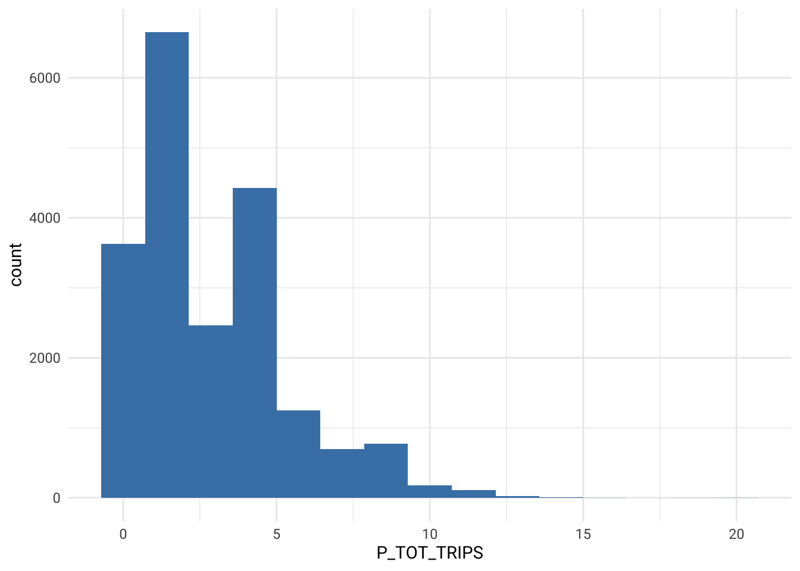
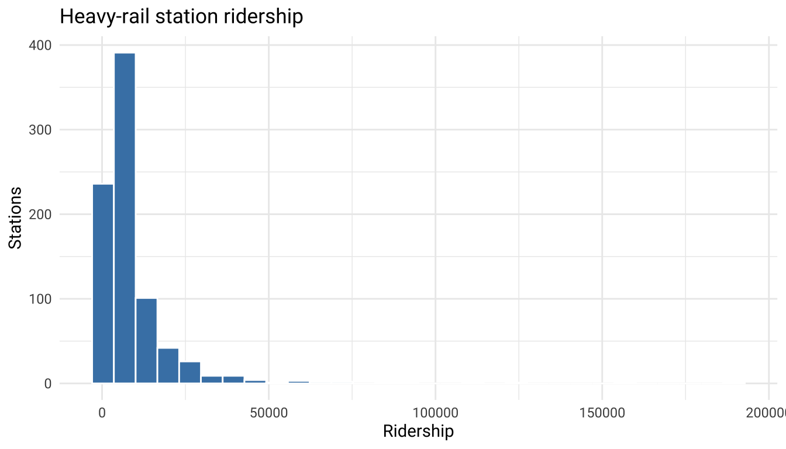
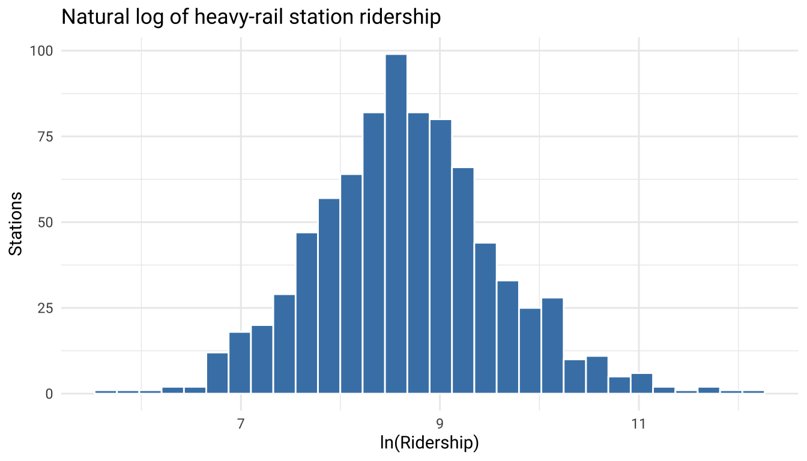
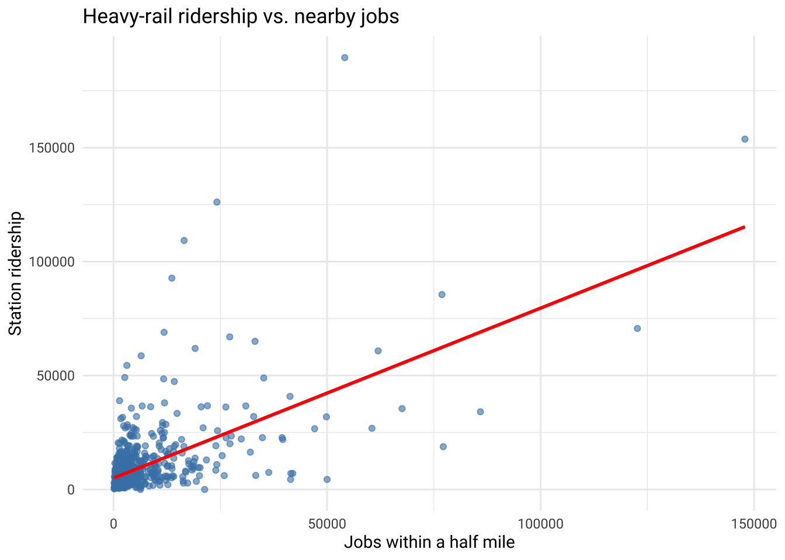
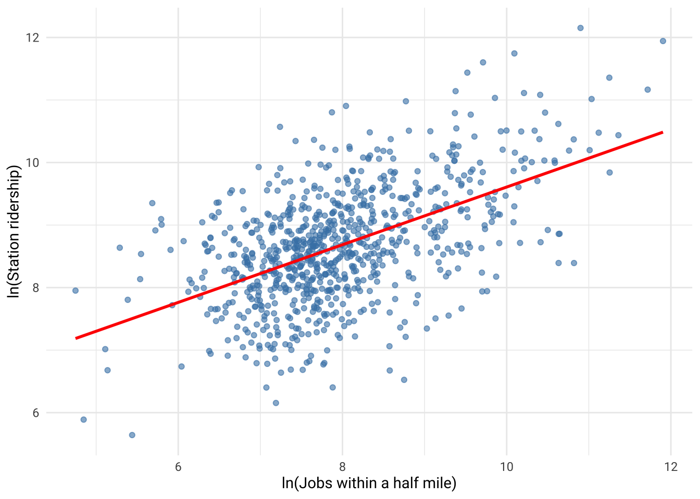
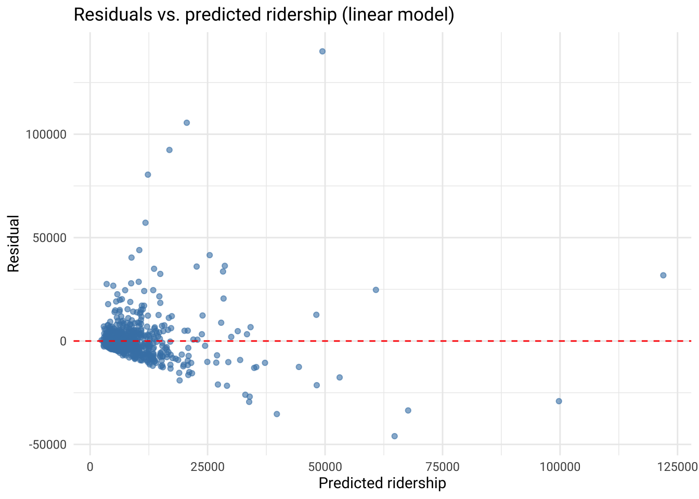
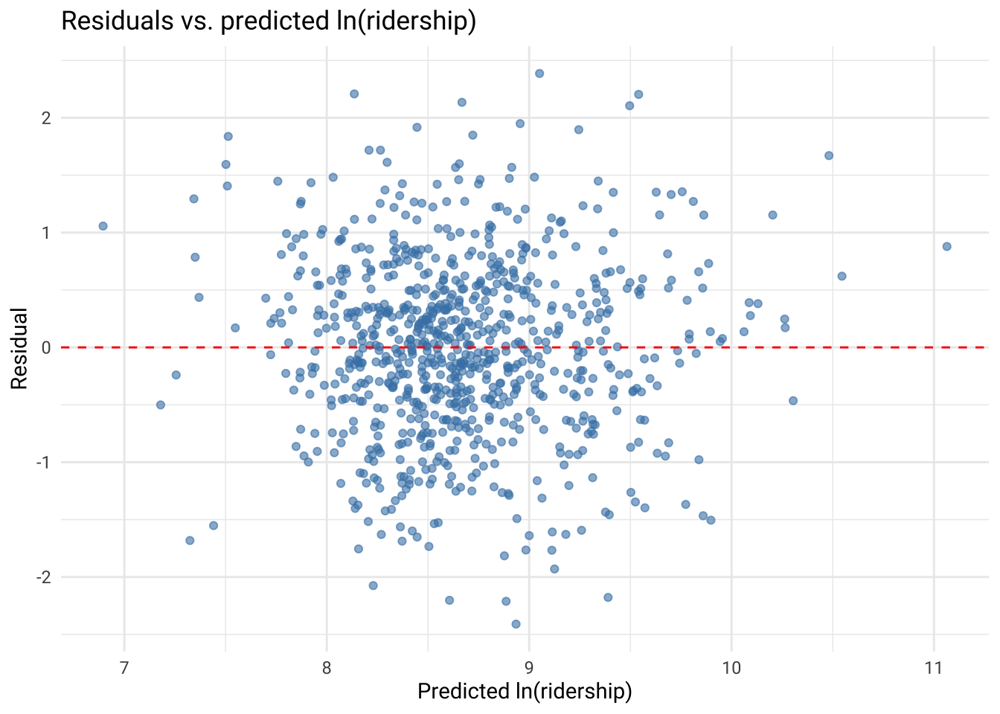

Code
library(tidyverse)
library(readxl)
library(ggplot2)
library(showtext)
font_add_google(name = "Roboto", family = "roboto")
showtext_auto()library(tidyverse)
library(readxl)
library(ggplot2)
library(showtext)
font_add_google(name = "Roboto", family = "roboto")
showtext_auto()hh <- readr::read_csv("Household travel survey/1_Household_Public.csv",
locale = readr::locale(encoding = "latin1"))
per <- readr::read_csv("Household travel survey/2_Person_Public.csv",
locale = readr::locale(encoding = "latin1"))
veh <- readr::read_csv("Household travel survey/3_Vehicle_Public.csv",
locale = readr::locale(encoding = "latin1"))
trip <- readr::read_csv("Household travel survey/4_Trip_Public.csv",
locale = readr::locale(encoding = "latin1"))
hh_dict <- read_excel("dd.xlsx", sheet = "1 Household")
per_dict <- read_excel("dd.xlsx", sheet = "2 Person")
veh_dict <- read_excel("dd.xlsx", sheet = "3 Vehicle")
trip_dict <- read_excel("dd.xlsx", sheet = "4 Trip")ggplot(per) +
geom_histogram(aes(x = P_TOT_TRIPS), bins = 15, fill='steelblue') +
theme_minimal(base_family='roboto')
The distribution of the number of trips people made is right-skewed; from visual analysis alone, most people took 1-5 trips, while fewer people took more than 5 trips. A log transformation may be beneficial for a regression model.
# 1 = no trips, 0 = at least one trip
per$no_trips <- ifelse(per$P_TOT_TRIPS == 0, 1, 0)
sum(per$no_trips, na.rm = TRUE) # number of people with no trips[1] 3625table(per$no_trips) # counts for both groups
0 1
16591 3625 prop.table(table(per$no_trips)) # shares
0 1
0.8206866 0.1793134 In the sample, 3,625 people took no trips, about 18% of those sampled.
# Recode "don't know" / "refused" codes to NA
per <- per %>%
mutate(
AGECAT = ifelse(AGECAT %in% c(98, 99), NA, AGECAT),
RACE = ifelse(RACE %in% c(98, 99, 988), NA, RACE)
)
# Readable labels
per <- per %>%
mutate(
RACE_lab = factor(RACE,
levels = c(1, 2, 3, 4, 5, 6, 97, 100),
labels = c("White", "Black", "Hispanic/Latino",
"Am. Indian/Alaska Native", "Asian",
"Pacific Islander", "Other", "Multi-race")),
AGE_lab = factor(AGECAT, levels = 1:12,
labels = c("<=5", "6-12", "13-15", "16-17", "18-24", "25-34",
"35-44", "45-54", "55-64", "65-74", "75-85", "86+"))
)Column percentages (the share of each group falling in each category):
round(prop.table(table(per$RACE_lab, per$no_trips), margin = 2), 3)
0 1
White 0.876 0.843
Black 0.071 0.102
Hispanic/Latino 0.015 0.017
Am. Indian/Alaska Native 0.001 0.002
Asian 0.022 0.023
Pacific Islander 0.000 0.001
Other 0.003 0.002
Multi-race 0.011 0.010round(prop.table(table(per$AGE_lab, per$no_trips), margin = 2), 3)
0 1
<=5 0.037 0.069
6-12 0.073 0.039
13-15 0.035 0.018
16-17 0.023 0.012
18-24 0.048 0.059
25-34 0.080 0.060
35-44 0.099 0.066
45-54 0.168 0.110
55-64 0.216 0.177
65-74 0.151 0.197
75-85 0.061 0.144
86+ 0.010 0.04984% of those taking no trips were white, followed by 10% Black and 2% Asian. 88% of those taking trips were white, followed by 7% Black and 2% Asian. Black residents are somewhat overrepresented among those who took no trips (10% versus 7%).
Among those taking no trips, the largest age shares were in the 65-74 category (20%), followed by 55-64 (18%) and 75-85 (14%). Among those taking trips, the largest shares were in the 55-64 category (22%), followed by 45-54 (17%) and 65-74 (15%). People who took no trips skew much older: those 75 and over are 19% of non-travelers versus 7% of travelers, and children 5 and under are 7% versus 4%.
Income comes from the household table:
per <- per %>% left_join(hh %>% select(HH_ID, INCOME), by = "HH_ID")
round(prop.table(table(per$INCOME, per$no_trips), margin = 2), 3)
0 1
1 0.021 0.034
2 0.058 0.097
3 0.050 0.078
4 0.088 0.120
5 0.156 0.172
6 0.162 0.123
7 0.200 0.152
8 0.097 0.071
9 0.054 0.046
10 0.036 0.023
98 0.001 0.002
99 0.077 0.081Among those taking no trips, the largest income shares were households making $50-$74K (17%), $100-$149K (15%), and $75-$99K (12%). Among those taking trips, the largest were $100-$149K (20%), $75-$99K (16%), and $50-$74K (16%). People who took no trips tend to live in lower-income households: households under $50K make up 33% of non-travelers versus 22% of travelers, while households making $75K or more make up 29% versus 39%.
Percentage of people who did not travel, by the reason they reported.
whyno_labels <- c(
"1" = "Personally sick",
"2" = "Vacation or personal day",
"3" = "Caretaking sick kids",
"4" = "Caretaking sick other",
"5" = "Homebound elderly or disabled",
"6" = "Worked at home for pay",
"7" = "Not scheduled to work",
"8" = "Worked around home (not for pay)",
"9" = "No transportation available",
"10" = "Out of Delaware Valley region",
"11" = "Weather",
"12" = "No reason to travel",
"97" = "Other",
"98" = "Don't know",
"99" = "Refused"
)
# One record per person who did not travel
no_travel <- trip %>%
filter(TRIP_NUM == 0) %>%
distinct(PERSON_ID, .keep_all = TRUE)
# Unweighted: share of non-travelers giving each reason
why_tbl <- no_travel %>%
mutate(Reason = factor(WHYNO,
levels = as.numeric(names(whyno_labels)),
labels = whyno_labels)) %>%
count(Reason, name = "People") %>%
mutate(Percent = round(100 * People / sum(People), 1)) %>%
arrange(desc(People))
knitr::kable(why_tbl, caption = "Reasons for making no trips")| Reason | People | Percent |
|---|---|---|
| No reason to travel | 1351 | 37.3 |
| Personally sick | 341 | 9.4 |
| Worked around home (not for pay) | 337 | 9.3 |
| Refused | 296 | 8.2 |
| Homebound elderly or disabled | 292 | 8.1 |
| Weather | 221 | 6.1 |
| Worked at home for pay | 211 | 5.8 |
| Not scheduled to work | 172 | 4.7 |
| Vacation or personal day | 168 | 4.6 |
| Out of Delaware Valley region | 111 | 3.1 |
| No transportation available | 36 | 1.0 |
| Other | 33 | 0.9 |
| Caretaking sick other | 29 | 0.8 |
| Caretaking sick kids | 20 | 0.6 |
| Don’t know | 7 | 0.2 |
The five most common reasons for not taking trips (not including the Refused category, which accounts for 8.2% of non-travelers) are:
After the first reason, the remaining four are each below 10%, and the top five together account for about 70% of non-travelers.
df <- read.csv("data.csv")
hrt <- subset(df, hrt_d == 1) # heavy-rail stations onlyHistograms of heavy-rail station ridership and its natural log.
hrt_pos <- subset(hrt, rider > 0)
hrt_pos$ln_rider <- log(hrt_pos$rider)
ggplot(hrt_pos, aes(rider)) +
geom_histogram(bins = 30, fill = "steelblue", color = "white") +
labs(title = "Heavy-rail station ridership", x = "Ridership", y = "Stations") + theme_minimal(base_family='roboto') 
ggplot(hrt_pos, aes(ln_rider)) +
geom_histogram(bins = 30, fill = "steelblue", color = "white") +
labs(title = "Natural log of heavy-rail station ridership",
x = "ln(Ridership)", y = "Stations") + theme_minimal(base_family='roboto') 
summary(hrt_pos$rider); sd(hrt_pos$rider) Min. 1st Qu. Median Mean 3rd Qu. Max.
282 3249 5660 9350 9977 189507 [1] 13971.11summary(hrt_pos$ln_rider); sd(hrt_pos$ln_rider) Min. 1st Qu. Median Mean 3rd Qu. Max.
5.642 8.086 8.641 8.667 9.208 12.152 [1] 0.9222299The distribution of heavy-rail station ridership is strongly right-skewed. Most stations have fairly low ridership, with a long tail of a few very busy stations. The mean (9,350) is well above the median (5,660), the standard deviation (13,971) is larger than the mean, and the busiest station (189,507) is about 670 times the quietest (282).
The distribution of the natural log of ridership is roughly bell-shaped and symmetric, with stations clustering around the center. The mean (8.67) and median (8.64) are nearly identical, and the standard deviation is only 0.92. Taking the natural log compresses the long right tail and spreads out the clustered low values, which turns a skewed distribution into a roughly normal one. This is helpful for regression because it reduces the influence of extreme stations and makes relationships more linear.
Ridership against jobs within a half mile.
ggplot(hrt, aes(x = jobs_halfmile, y = rider)) +
geom_point(alpha = 0.6, color = "steelblue") +
geom_smooth(method = "lm", se = FALSE, color = "red") +
labs(title = "Heavy-rail ridership vs. nearby jobs",
x = "Jobs within a half mile", y = "Station ridership") + theme_minimal(base_family='roboto')
cor(hrt$jobs_halfmile, hrt$rider, use = "complete.obs")[1] 0.595328Ridership generally increases with the number of jobs within a half mile: the correlation is positive and moderate (\(r = 0.60\)), and the fitted line slopes upward. The relationship is noisy, though. Most stations are packed near the origin with few nearby jobs and low ridership, the spread of ridership grows as jobs increase, and a handful of outlying stations (for example, one with about 190,000 riders and another with about 150,000 jobs) pull the line. A linear relationship is therefore only a rough approximation. A straight line fits the many low-value stations poorly and is dominated by a few extreme points.
Same scatterplot with both variables in natural logs.
ggplot(subset(hrt, rider > 0 & jobs_halfmile > 0),
aes(x = log(jobs_halfmile), y = log(rider))) +
geom_point(alpha = 0.6, color = "steelblue") +
geom_smooth(method = "lm", se = FALSE, color = "red") +
labs(x = "ln(Jobs within a half mile)", y = "ln(Station ridership)") + theme_minimal(base_family='roboto')
hrt_pj <- subset(hrt, rider > 0 & jobs_halfmile > 0)
cor_log <- cor(log(hrt_pj$jobs_halfmile), log(hrt_pj$rider))
cor_log[1] 0.5310356With both variables log-transformed, the relationship is positive and appears roughly linear (\(r=0.53\)). Compared with Question 7, the points now form a roughly even, elliptical cloud around the fitted line instead of being crowded into the lower-left corner. The scatter around the line is similar at low and high values, and no extreme outliers dominate the fit. A linear relationship is therefore much more reasonable here. The slope is also interpretable as an elasticity: a 1% increase in nearby jobs is associated with a roughly proportional percentage increase in ridership. Some scatter remains, which suggests other factors besides jobs matter.
Ridership as a function of population and jobs within a half mile, terminal status, and airport connection.
m1 <- lm(rider ~ pop_halfmile + jobs_halfmile + terminal_d + airport_d, data = hrt)
summary(m1)
Call:
lm(formula = rider ~ pop_halfmile + jobs_halfmile + terminal_d +
airport_d, data = hrt)
Residuals:
Min 1Q Median 3Q Max
-46014 -3601 -1659 1400 140074
Coefficients:
Estimate Std. Error t value Pr(>|t|)
(Intercept) 2.159e+03 6.669e+02 3.238 0.00125 **
pop_halfmile 2.198e-01 4.778e-02 4.600 4.88e-06 ***
jobs_halfmile 7.403e-01 3.414e-02 21.683 < 2e-16 ***
terminal_d 5.767e+03 1.249e+03 4.619 4.48e-06 ***
airport_d 6.803e+02 4.197e+03 0.162 0.87128
---
Signif. codes: 0 '***' 0.001 '**' 0.01 '*' 0.05 '.' 0.1 ' ' 1
Residual standard error: 10970 on 829 degrees of freedom
Multiple R-squared: 0.3857, Adjusted R-squared: 0.3827
F-statistic: 130.1 on 4 and 829 DF, p-value: < 2.2e-16The model explains 38.6% of the variation in station ridership (adjusted \(R^2\) = 0.383). Holding the other variables constant, each coefficient is the change in average daily station ridership (riders) for a one-unit change in the predictor:
The indicator coefficients are in riders and are not comparable in size with the per-person and per-job coefficients, because they are measured in different units. Population and jobs are the continuous predictors, so their effects scale with how many residents and jobs a station has nearby.
Predicted ridership for a station with 5,000 residents and 10,000 jobs within a half mile that is neither a terminal nor an airport station.
new_station <- data.frame(
pop_halfmile = 5000,
jobs_halfmile = 10000,
terminal_d = 0,
airport_d = 0
)
pr <- predict(m1, newdata = new_station, interval = "prediction", level = 0.95)
pr fit lwr upr
1 10661.67 -10892.05 32215.38The estimated regression equation is
\[\widehat{\text{rider}} = 2159.3 + 0.2198(\text{pop}) + 0.7403(\text{jobs}) + 5767(\text{terminal}) + 680.3(\text{airport}).\]
Substituting 5,000 residents, 10,000 jobs, and 0 for both indicators:
\[\widehat{\text{rider}} = 2159.3 + 0.2198(5000) + 0.7403(10000) + 5767(0) + 680.3(0) \approx 10662.\]
The model therefore predicts about 10,662 daily riders. The terminal and airport terms drop out because both indicators equal zero. The 95% prediction interval for an individual station like this runs from -10,892 to 32,215 riders, which is wide, so the prediction is imprecise. The lower bound is negative, which is impossible for ridership, a sign that a linear model in levels is not well suited to these data.
Predicted ridership against residuals for the linear model.
diag1 <- data.frame(fitted = fitted(m1), resid = resid(m1))
ggplot(diag1, aes(x = fitted, y = resid)) +
geom_point(alpha = 0.6, color = "steelblue") +
geom_hline(yintercept = 0, color = "red", linetype = "dashed") +
labs(title = "Residuals vs. predicted ridership (linear model)",
x = "Predicted ridership", y = "Residual") + theme_minimal(base_family='roboto')
Since the residual vs. predicted values plot has a clear visual pattern (funnel-shape), there is visual evidence of heteroscedasticity. This indicates that the model performs better for stations with lower predicted ridership than for those with higher predicted ridership. At low predicted values the residuals are tightly packed near zero, while at higher predicted values they are much more spread out. The largest residuals are large positive values, meaning the model badly underpredicts a few busy stations. Because the errors are not constant, the standard errors and \(p\)-values from Question 9 are unreliable.
If the model performed equally well across the full range of predicted ridership, the residuals would be scattered randomly around zero with roughly constant spread at every predicted value (homoscedastic), with no trend or curve.
Log-log model (indicators are not transformed), with its residual plot.
hrt_log <- subset(hrt, rider > 0 & pop_halfmile > 0 & jobs_halfmile > 0)
m_log <- lm(log(rider) ~ log(pop_halfmile) + log(jobs_halfmile) + terminal_d + airport_d,
data = hrt_log)
summary(m_log)
Call:
lm(formula = log(rider) ~ log(pop_halfmile) + log(jobs_halfmile) +
terminal_d + airport_d, data = hrt_log)
Residuals:
Min 1Q Median 3Q Max
-2.41022 -0.45769 0.01426 0.49719 2.38621
Coefficients:
Estimate Std. Error t value Pr(>|t|)
(Intercept) 4.02917 0.30738 13.108 < 2e-16 ***
log(pop_halfmile) 0.08622 0.02467 3.495 0.000499 ***
log(jobs_halfmile) 0.48006 0.02516 19.080 < 2e-16 ***
terminal_d 0.46287 0.08759 5.285 1.61e-07 ***
airport_d 0.48985 0.29644 1.652 0.098823 .
---
Signif. codes: 0 '***' 0.001 '**' 0.01 '*' 0.05 '.' 0.1 ' ' 1
Residual standard error: 0.7648 on 827 degrees of freedom
Multiple R-squared: 0.3157, Adjusted R-squared: 0.3124
F-statistic: 95.37 on 4 and 827 DF, p-value: < 2.2e-16diag_log <- data.frame(fitted = fitted(m_log), resid = resid(m_log))
ggplot(diag_log, aes(x = fitted, y = resid)) +
geom_point(alpha = 0.6, color = "steelblue") +
geom_hline(yintercept = 0, color = "red", linetype = "dashed") +
labs(title = "Residuals vs. predicted ln(ridership)",
x = "Predicted ln(ridership)", y = "Residual") + theme_minimal(base_family='roboto')
The output once again shows positive linear relationships between the predictors and the dependent variable, with all predictors besides airport_d being statistically significant.
The residual vs predicted values plot for the new model does not have a clear visual pattern, showing homoscedasticity in the residuals.
cf2 <- summary(m_log)$coefficients
round(cf2, 4) Estimate Std. Error t value Pr(>|t|)
(Intercept) 4.0292 0.3074 13.1079 0.0000
log(pop_halfmile) 0.0862 0.0247 3.4951 0.0005
log(jobs_halfmile) 0.4801 0.0252 19.0803 0.0000
terminal_d 0.4629 0.0876 5.2847 0.0000
airport_d 0.4899 0.2964 1.6524 0.0988data.frame(model = c("Linear (Q9)", "Log-log (Q12)"),
n = c(nobs(m1), nobs(m_log)),
R2 = round(c(summary(m1)$r.squared, summary(m_log)$r.squared), 3),
adj_R2 = round(c(summary(m1)$adj.r.squared, summary(m_log)$adj.r.squared), 3)) model n R2 adj_R2
1 Linear (Q9) 834 0.386 0.383
2 Log-log (Q12) 832 0.316 0.312Coefficients. In the linear model the coefficients are additive effects in riders. In the log-log model the coefficients on log(pop_halfmile) and log(jobs_halfmile) are elasticities: a 1% increase in nearby population is associated with a 0.09% change in ridership, and a 1% increase in nearby jobs with a 0.48% change, holding the other variables constant. The indicators are not logged, so they are multiplicative effects: terminal stations have about 59% higher ridership than non-terminal stations (p < 0.001, statistically significant at the 5% level), and airport stations about 63% higher (p = 0.099, not statistically significant at the 5% level).
Fit. The log-log model has an \(R^2\) of 0.316 compared with 0.386 for the linear model. These \(R^2\) values are measured on different dependent variables (ln ridership versus ridership), so they are only a rough comparison, and the residual standard errors cannot be compared directly at all.
Residuals. The linear model’s residuals fan out with predicted ridership (heteroscedasticity). The log-log residuals are evenly scattered around zero with roughly constant spread.
Conclusion. The log-log specification is more appropriate. Its residuals meet the constant-variance assumption, so its standard errors and \(p\)-values can be trusted. It cannot predict negative ridership. It also matches the distributions we saw earlier (skewed ridership, roughly normal ln ridership, and a roughly linear relationship in logs), and its elasticity coefficients are easy to interpret. One limitation is that stations with zero ridership, population or jobs are dropped from this model, because their logs are undefined.
Adding a park-and-ride indicator to the log-log model.
# Use the same stations in both models so they can be compared
hrt_log2 <- subset(hrt_log, !is.na(parking_d))
m_log_b <- update(m_log, data = hrt_log2)
m_log2 <- lm(log(rider) ~ log(pop_halfmile) + log(jobs_halfmile) +
terminal_d + airport_d + parking_d,
data = hrt_log2)
summary(m_log2)
Call:
lm(formula = log(rider) ~ log(pop_halfmile) + log(jobs_halfmile) +
terminal_d + airport_d + parking_d, data = hrt_log2)
Residuals:
Min 1Q Median 3Q Max
-2.41102 -0.45658 0.01342 0.50100 2.38481
Coefficients:
Estimate Std. Error t value Pr(>|t|)
(Intercept) 4.036107 0.324512 12.437 < 2e-16 ***
log(pop_halfmile) 0.085908 0.025117 3.420 0.000656 ***
log(jobs_halfmile) 0.479651 0.025907 18.514 < 2e-16 ***
terminal_d 0.463970 0.089158 5.204 2.46e-07 ***
airport_d 0.489571 0.296651 1.650 0.099256 .
parking_d -0.004544 0.067741 -0.067 0.946537
---
Signif. codes: 0 '***' 0.001 '**' 0.01 '*' 0.05 '.' 0.1 ' ' 1
Residual standard error: 0.7652 on 826 degrees of freedom
Multiple R-squared: 0.3157, Adjusted R-squared: 0.3115
F-statistic: 76.2 on 5 and 826 DF, p-value: < 2.2e-16anova(m_log_b, m_log2)Analysis of Variance Table
Model 1: log(rider) ~ log(pop_halfmile) + log(jobs_halfmile) + terminal_d +
airport_d
Model 2: log(rider) ~ log(pop_halfmile) + log(jobs_halfmile) + terminal_d +
airport_d + parking_d
Res.Df RSS Df Sum of Sq F Pr(>F)
1 827 483.67
2 826 483.66 1 0.0026345 0.0045 0.9465AIC(m_log_b, m_log2) df AIC
m_log_b 6 1921.808
m_log2 7 1923.803cf_a <- summary(m_log_b)$coefficients
cf_b <- summary(m_log2)$coefficients
vars <- rownames(cf_a)
data.frame(variable = vars,
without_parking = round(cf_a[vars, 1], 3),
with_parking = round(cf_b[vars, 1], 3),
pct_change = round(100 * (cf_b[vars, 1] - cf_a[vars, 1]) / abs(cf_a[vars, 1]), 1)) variable without_parking with_parking pct_change
(Intercept) (Intercept) 4.029 4.036 0.2
log(pop_halfmile) log(pop_halfmile) 0.086 0.086 -0.4
log(jobs_halfmile) log(jobs_halfmile) 0.480 0.480 -0.1
terminal_d terminal_d 0.463 0.464 0.2
airport_d airport_d 0.490 0.490 -0.1bp <- cf_b["parking_d", 1]
pp <- cf_b["parking_d", 4]
dAIC <- AIC(m_log_b) - AIC(m_log2)
pF <- anova(m_log_b, m_log2)$`Pr(>F)`[2]Interpretation. The coefficient on parking_d is -0.0045. Because the dependent variable is ln(ridership) and the indicator is not logged, stations with park-and-ride facilities have about 0.5% lower ridership than stations without, holding population, jobs, terminal and airport status constant. That is effectively zero.
Significance and reasonableness. The coefficient is not statistically significant (\(p = 0.95\)), and its 95% confidence interval runs from about -0.14 to +0.13 (about -13% to +14% in ridership). We therefore find no evidence that park-and-ride facilities are associated with ridership once population, jobs, terminal and airport status are controlled for. A positive effect would have been plausible, since parking lets a station draw riders from beyond the half-mile catchment. The estimate may be near zero because the population and jobs measures already capture much of what differs between stations, or because park-and-ride stations tend to be in lower-density areas that offset any boost from parking. The sign is not meaningful given how close to zero the estimate is.
Effect on other coefficients. Adding the indicator barely changes the other estimates. The largest change in any coefficient is 0.4% (the intercept moves from 4.029 to 4.036, and the population, jobs, terminal and airport coefficients change by 0.2% or less), and no signs flip.
Model fit. Fit does not improve. Adjusted \(R^2\) falls slightly from 0.3124 to 0.3115, the F-test comparing the nested models gives \(p = 0.95\), and AIC increases from 1921.8 to 1923.8 (higher is worse). The park-and-ride indicator does not meaningfully improve the model, so the simpler model from Question 12 is preferred.